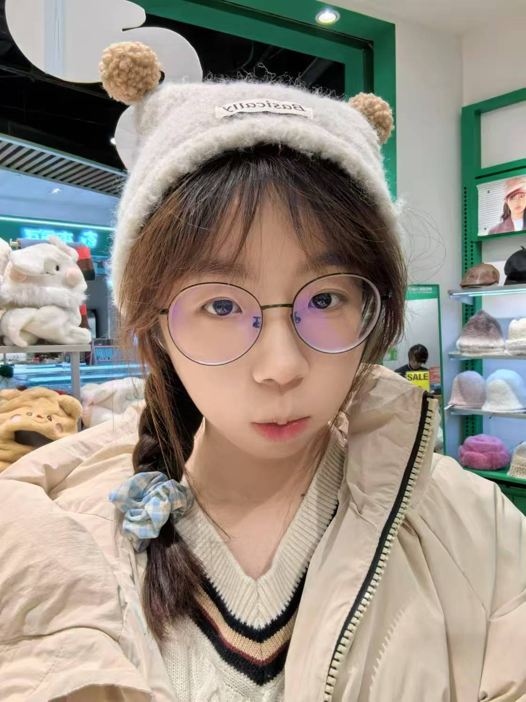
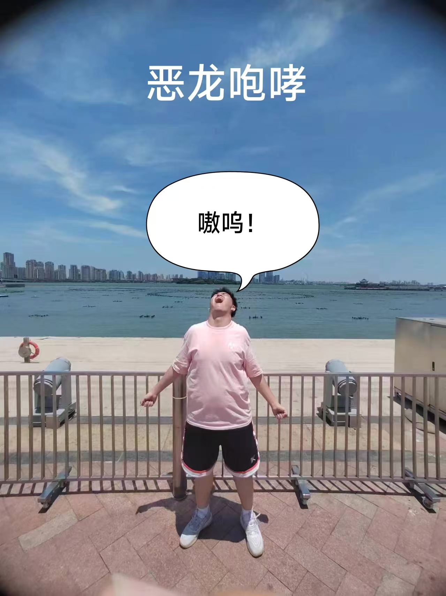
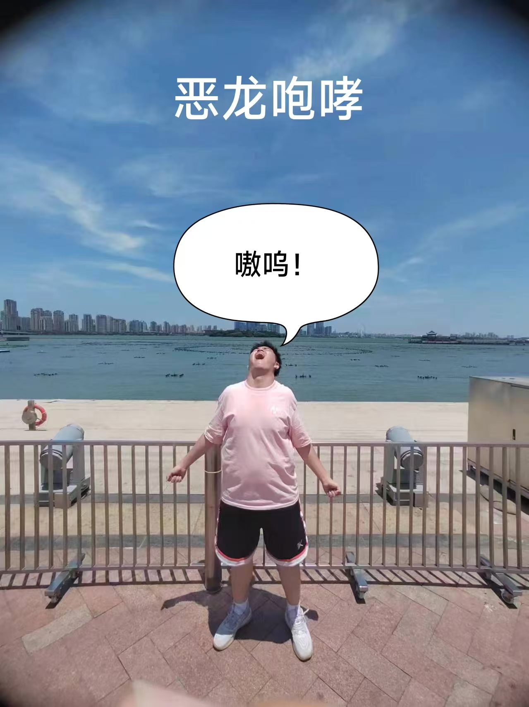

Personal Profile
Basic information
Name: 褚一满
Age: 18
Constellation:Scorpio
Gradyation school: Qingdao No.66 High School
Blood type: O
Hometown: Qingdao
Hobby:
1. Play basketball
2. Fitness
3. Create and listen to music
4. Playing games
Hornor:
1. Most Valuable Player of Qingdao Junior High School Group in 2020
2. 2020 Junior High School ‘校长杯’ Champion
3. Saxophone Level 10
4. Oboe Level 10
5. Hulusi Level 6
6.Second level Chess Player

Personal statement
一.Introduoce two people
1. Firstly,it's my girlfriend.We met at a tutoring class. I think this is what we call fate.
We have been together for fourmonths. She is very beautiful,meticulous,and intelligent.
So my good brothers often joke about me saying:'Men have higher eyes than women'. Of course,this is a joke.
After going to college, we would make video calls for more than an hour evertday. And I go to see her once a mounth.
I think we can have a good furture.
 
2.The second one is my close friend from high school. We sat at the same desk for a year during our senior year.
His surname is 'Zhu' and he is a bit overweight, so I gave him a nickname called 'Piggy'! We studyed ,played and ate all together.
Without his company, I may not have been able to finish mt senior year. After the college entrance examination,
the two of us and oher good friends went on a trip to Suzhou. It can be said that this will be the best trip of my life.
Not just because of the local customs and traditions, but because this is our youth.
And we have already started planning our summer travel plans for this year.

2.The second one is my close friend from high school. We sat at the same desk for a year during our senior year.
His surname is 'Zhu' and he is a bit overweight, so I gave him a nickname called 'Piggy'! We studyed ,played and ate all together.
Without his company, I may not have been able to finish mt senior year. After the college entrance examination,
the two of us and oher good friends went on a trip to Suzhou. It can be said that this will be the best trip of my life.
Not just because of the local customs and traditions, but because this is our youth.
And we have already started planning our summer travel plans for this year.
Click to enjoy the scenery of Suzhou !
二. My Favorite
1.Shameless: This is my favorite American TV series.
It tells the story of living in a low-income family on the South Side of Chicago from childhood to adulthood.
It made me realize new things and understand more truths.
2.Ordinary word: This is my favorite book, written by Lu Yao. It tells the development history of a rural family in northern Shaanxi in the 1970s.
The article is very vivid, with a strong sense of immersion, and very touching.
3.Night Tour: I don't like the daytime, maybe I have some social anxiety. I always like to go out for a walk alone at night. Going to the seaside to enjoy the sea breeze and watch the waves has a unique flavor. This is also my best way to relieve stress. Very relaxed.
Sometimes I stay up late until after three o'clock and don't sleep anymore. I ride my bike to a scenic spot to watch the sunrise, which is very healing.
Furture Plans
1. Apply to the top 150 school ranked by QS
2. IELTS score of 6.5 or above
3. Create a piece of music that you have written yourself